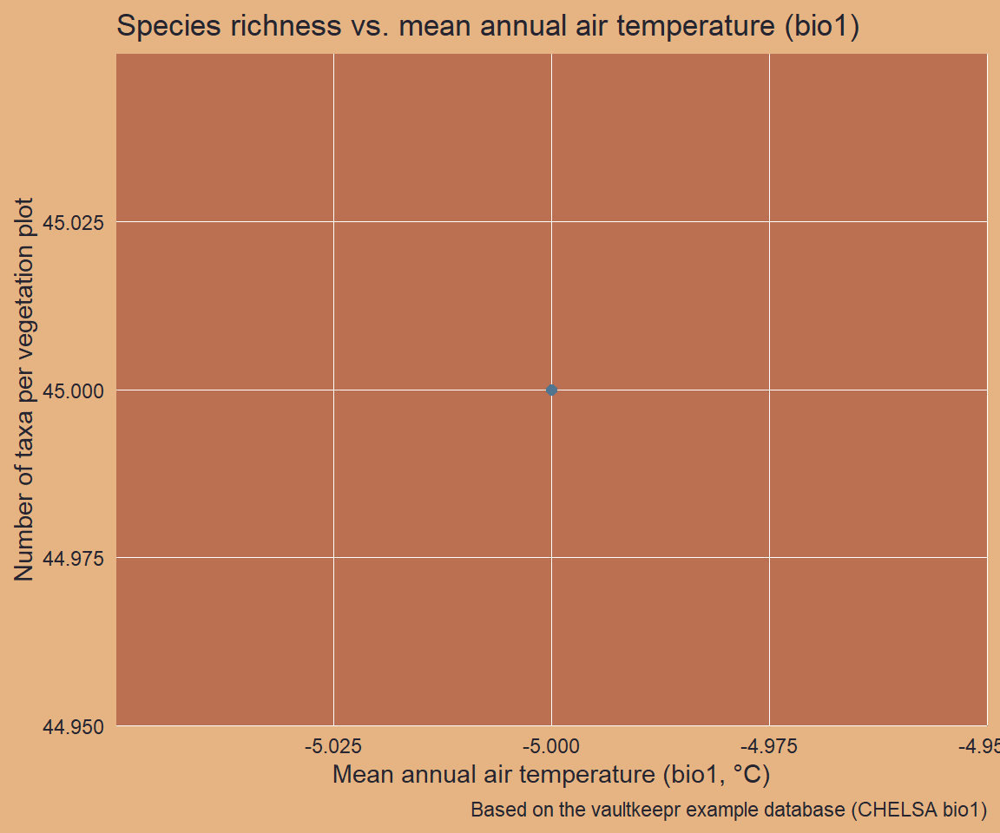

path_to_db <- source("helper_make_example_db.R")$valueIntroduction
Species distribution models (SDMs) require paired observations of species occurrences and environmental predictors at the same locations. VegVault stores both modern vegetation_plot records and climate gridpoints in a single database. The get_abiotic_data() function automatically links each vegetation sample to spatially and temporally proximate gridpoint samples, so you never have to manage the spatial join yourself.
The core idea of vaultkeepr is to build a plan first, then execute it. Each function call — get_datasets(), select_dataset_by_type(), get_samples(), and so on — adds a step to a lazy SQL query stored in the plan object without touching the database. When the plan is fully specified, a single call to extract_data() executes the complete query and returns a tibble ready for analysis.
Abiotic data in VegVault come from CHELSA (high-resolution climate), CHELSA-TRACE21 (palaeoclimate back to 21 ka), and WoSIS (soil properties). Variable names follow the original source conventions: CHELSA bioclimatic variables are named bio1–bio19, and the WoSIS soil classification is HWSD2. A full description is in the VegVault documentation.
In this article we prepare a dataset for an SDM over Europe: we extract modern (age = 0) vegetation plots together with mean annual air temperature (bio1, °C) from the nearest gridpoints.
We use a small example database (built automatically below) that mirrors the naming conventions of a real VegVault file. Swap the path for your own VegVault download to run on real data.
Step 1 — Open the vault
open_vault() creates a connection to the VegVault SQLite file and returns a vault_pipe object. This object is the plan — it carries both the live database connection and the accumulating lazy query through every subsequent step. Nothing is loaded into memory here.
library(vaultkeepr)
plan <-
open_vault(path = path_to_db)Step 2 — Add dataset metadata
get_datasets() extends the plan with the Datasets table — the central organising unit in VegVault. Each row is a unique dataset identified by its geographic coordinates, dataset type, source type (e.g. BIEN, sPlotOpen, gridpoints), and sampling method. At this point every dataset in the database is in scope.
plan <-
plan |>
get_datasets()Step 3 — Filter by dataset type
We need both vegetation_plot (the occurrence data) and gridpoints (the climate data). Including both types in the same query lets get_abiotic_data() find the correct spatial links.
plan <-
plan |>
select_dataset_by_type(
sel_dataset_type = c(
"vegetation_plot",
"gridpoints"
)
)Step 4 — Filter by geography
We restrict to a Central-European bounding box (longitude 14–16 °E, latitude 44–46 °N) centred on the Mediterranean–temperate transition zone. Filtering is pushed into the SQLite engine: only datasets whose coordinates fall within the bounding box are retained, so no unnecessary data is transferred.
Note that gridpoints datasets are not filtered by geography when vegetation_plot or fossil_pollen_archive datasets are also present: get_abiotic_data() handles the spatial matching internally and needs all nearby gridpoints to be available.
plan <-
plan |>
select_dataset_by_geo(
long_lim = c(14, 16),
lat_lim = c(44, 46)
)
#> The data does not contain the all dataset types specified in `vec_dataset_type`.
#> Changing `vec_dataset_type` to the dataset types present in the data as: vegetation_plot, gridpointsStep 5 — Add sample information
get_samples() extends the plan with sample-level metadata: age, sample name, sample size, and additional details. Samples with age = 0 are contemporary (modern) surveys; pollen core samples carry age in calibrated years BP. Every sample belongs to exactly one dataset, but a dataset may contain multiple samples if they differ in time.
plan <-
plan |>
get_samples()Step 6 — Restrict to modern samples only
Contemporary vegetation surveys in VegVault are assigned age = 0 (years before present). Setting age_lim = c(0, 0) adds an age filter to the plan, keeping only those samples and discarding any fossil pollen or historical records that may be present in the filtered datasets.
We restrict the age filter to "vegetation_plot" via sel_dataset_type so that gridpoint samples (which cover multiple time periods) are not removed. get_abiotic_data() in the next step needs all gridpoint time slices to find the correct spatial–temporal match for each vegetation sample.
plan <-
plan |>
select_samples_by_age(
age_lim = c(0, 0),
sel_dataset_type = "vegetation_plot"
)
#> The selected dataset type will not be filtered: gridpointsStep 7 — Attach abiotic data
get_abiotic_data() extends the plan with the spatial–temporal linkage between vegetation samples and nearby gridpoint samples. Under the hood it reads the AbioticDataReference table, which pre-computes the distance (km and years) between every non-gridpoint sample and every gridpoint within 50 km and 5,000 years. The default mode = "nearest" selects the single closest gridpoint for each vegetation sample; mode = "mean" averages all surrounding gridpoints instead. At this stage all abiotic variables are attached — we filter to a single variable in the next step.
plan <-
plan |>
get_abiotic_data()Step 8 — Select mean annual air temperature (bio1)
select_abiotic_var_by_name() adds a variable filter to the plan, retaining only the abiotic variable(s) matching the supplied name. In real VegVault, CHELSA bioclimatic variables are named bio1 through bio19 following standard conventions:
| Variable | Description | Unit |
|---|---|---|
bio1 |
Mean annual air temperature | °C |
bio4 |
Temperature seasonality (std dev × 100) | °C |
bio12 |
Annual precipitation amount | kg m⁻² yr⁻¹ |
HWSD2 |
Soil classification (WoSIS) | Unitless |
All eight abiotic variables available in VegVault, with full descriptions and units, are listed in the Abiotic Variables section of the VegVault Database Structure.
We select "bio1" here to pair each vegetation plot with its local mean annual air temperature.
plan <-
plan |>
select_abiotic_var_by_name(sel_var_name = "bio1")Step 9 — Add taxa
get_taxa() extends the plan with the SampleTaxa and Taxa tables, adding taxon names and abundance values (value). Here we use the default classify_to = NULL (no harmonisation) to work with the original species-level identification, which gives the finest-grained estimate of per-sample species richness. For cross-database comparisons you would set classify_to = "genus" or classify_to = "family".
Warning
classify_totriggers a computationally expensive join against theTaxonClassificationtable. On a large query this can be very slow. In addition, the taxonomic harmonisation is produced by an automated process: misclassifications can occur, especially for ambiguous names or taxa not covered by the GBIF backbone. Always verify results for taxa that are critical to your analysis.
plan <-
plan |>
get_taxa()Step 10 — Execute the plan
The plan is now fully specified. extract_data() executes the complete lazy query and returns a nested tibble — one row per dataset — with sample metadata in data_samples, taxon abundances in data_community (for vegetation plots), and climate values in data_abiotic (linked from the matching gridpoints). See Exploring extract_data() for a detailed walkthrough of both output modes.
data_eu_sdm <-
plan |>
extract_data(verbose = FALSE)
dplyr::glimpse(data_eu_sdm)
#> Rows: 28
#> Columns: 10
#> $ dataset_name <chr> "dataset_506", "dataset_82", "dataset_83", "da…
#> $ data_source_desc <chr> NA, "EVA (European Vegetation Archive)", "EVA …
#> $ dataset_type <chr> "gridpoints", "vegetation_plot", "vegetation_p…
#> $ dataset_source_type <chr> "gridpoints", "BIEN", "BIEN", "BIEN", "sPlotOp…
#> $ coord_long <dbl> 15.00257, 15.00000, 15.00000, 15.00000, 15.000…
#> $ coord_lat <dbl> 44.98108, 45.00000, 45.00000, 45.00000, 45.000…
#> $ sampling_method_details <chr> NA, "Standardised vegetation plot survey (1–10…
#> $ data_samples <list> [<tbl_df[1 x 5]>], [<tbl_df[2 x 5]>], [<tbl_d…
#> $ data_community <list> <NULL>, [<tbl_df[2 x 46]>], [<tbl_df[2 x 46]>…
#> $ data_abiotic <list> <NULL>, [<tbl_df[2 x 7]>], [<tbl_df[2 x 7]>],…Full pipeline
data_eu_sdm <-
open_vault(path = path_to_db) |>
get_datasets() |>
select_dataset_by_type(
sel_dataset_type = c("vegetation_plot", "gridpoints")
) |>
select_dataset_by_geo(
long_lim = c(14, 16),
lat_lim = c(44, 46)
) |>
get_samples() |>
select_samples_by_age(age_lim = c(0, 0)) |>
get_abiotic_data() |>
select_abiotic_var_by_name(sel_var_name = "bio1") |>
get_taxa() |>
extract_data()Visualising the data
data_eu_sdm holds one row per dataset. Vegetation plot datasets carry taxon abundances in data_community (wide format: one column per taxon) and the linked climate values in data_abiotic. We unnest both to compute per-sample species richness and pair each sample with its mean annual air temperature.
# Species richness per sample from the nested community data
data_richness <-
data_eu_sdm |>
dplyr::filter(dataset_type == "vegetation_plot") |>
dplyr::select(dataset_name, data_community) |>
tidyr::unnest(cols = data_community) |>
tidyr::pivot_longer(
cols = -c(dataset_name, sample_name),
names_to = "taxon",
values_to = "abund"
) |>
dplyr::filter(abund > 0) |>
dplyr::group_by(dataset_name, sample_name) |>
dplyr::summarise(
n_taxa = dplyr::n_distinct(taxon),
.groups = "drop"
)
# Temperature (bio1) per sample from the nested abiotic data
data_temp <-
data_eu_sdm |>
dplyr::filter(dataset_type == "vegetation_plot") |>
dplyr::select(dataset_name, data_abiotic) |>
tidyr::unnest(cols = data_abiotic) |>
dplyr::select(dataset_name, sample_name, abiotic_value) |>
dplyr::distinct()
# Join richness to temperature
data_for_plot <-
data_richness |>
dplyr::left_join(
data_temp,
by = dplyr::join_by(dataset_name, sample_name)
) |>
tidyr::drop_na(abiotic_value)
ggplot2::ggplot(
data = data_for_plot,
mapping = ggplot2::aes(x = abiotic_value, y = n_taxa)
) +
ggplot2::geom_point(
colour = col_blue_light,
alpha = 0.7,
size = 2
) +
ggplot2::geom_smooth(
method = "lm",
formula = y ~ x,
colour = col_brown_dark,
se = FALSE
) +
ggplot2::labs(
title = "Species richness vs. mean annual air temperature (bio1)",
x = "Mean annual air temperature (bio1, \u00b0C)",
y = "Number of taxa per vegetation plot",
caption = "Based on the vaultkeepr example database (CHELSA bio1)"
)
Next steps
- Select additional climate variables with
select_abiotic_var_by_id() - Change the spatial linking mode via
get_abiotic_data(mode = "mean") - Add historical climate data by relaxing the age filter
- Retrieve data citations with
get_references() - Explore both output modes of
extract_data()— see the Exploring extract_data() article - Combine with trait data — see the functional traits article
- A comparable real-data example — an SDM for all vegetation in Czechia — is shown in the VegVault Usage Examples